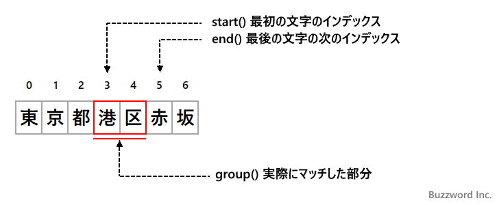
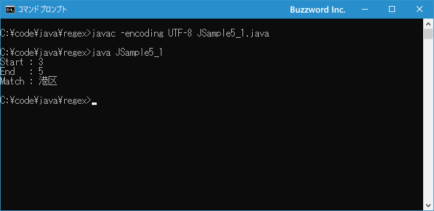

- Home ›
- Java入門 ›
- Java正規表現の使い方
パターンとマッチした部分文字列の情報を取得する(Matcher.start,Matcher.end,Matcher.group)
Matcher クラスの find メソッドなどを使ってパターンが対象の文字列にマッチした場合に、対象の文字列の中でどの部分文字列がマッチしたのかの情報を取得することができます。 start メソッドでマッチした部分の最初の文字のインデックス、 end メソッドでマッチした部分の最後の文字の次のインデックス、 group メソッドでマッチした部分文字列を取得できます。ここでは Java の正規表現でパターンとマッチした部分文字列の情報を取得する方法について解説します。
パターンとマッチした部分文字列の情報を取得する
Matcher クラスの start メソッドは find メソッドなどを使ってマッチに成功した場合に、マッチした部分の最初の文字のインデックスを取得します。書式は次の通りです。
public int start()
戻り値:
マッチした最初の文字のインデックス
例外:
IllegalStateException - マッチがまだ試みられていない場合、または前回のマッチ操作が失敗した場合
同じように Matcher クラスの end メソッドは find メソッドなどを使ってマッチに成功した場合に、マッチした部分の最後の文字の次のインデックスを取得します。書式は次の通りです。
public int end()
戻り値:
最後にマッチした文字の後のオフセット
例外:
IllegalStateException - マッチがまだ試みられていない場合、または前回のマッチ操作が失敗した場合
どちらのメソッドも Matcher クラスの find メソッドや matches メソッドを実行してマッチが成功した場合に、そのあとでそれぞれのメソッドを呼び出すと前回マッチした時の情報を取得することができます。
また Matcher クラスの group メソッドは find メソッドなどを使ってマッチに成功した場合に、マッチした部分文字列を取得します。書式は次の通りです。
public String group()
戻り値:
文字列形式の、前回のマッチで一致した部分シーケンス(空の場合もある)
例外:
IllegalStateException - マッチがまだ試みられていない場合、または前回のマッチ操作が失敗した場合
group メソッドを使うことで、実際にどの部分とマッチしたのかを確認することができます。
次のサンプルを見てください。
// java.util.regex.*のインポートが必要です
import java.util.regex.*;
String regex = ".区";
Pattern p = Pattern.compile(regex);
Matcher m = p.matcher("東京都港区赤坂");
if (m.find()){
System.out.println(m.start()); // 3
System.out.println(m.end()); // 5
System.out.println(m.group()); // 港区
}
find メソッドを使ってパターン ".区" が対象の文字列 "東京都港区赤坂" とマッチするか検索し、マッチした場合は start メソッドと end メソッドを使ってマッチした部分のインデックスを取得しています。今回の場合は "港区" の部分とマッチするため、 start と end メソッドがどの部分のインデックスを取得するのかは次の図を参考にしてください。

※ パターン文字列 ".区" は任意の 1 文字のあとに "区"が続く文字列とマッチします。
それでは簡単なサンプルプログラムを作って試してみます。テキストエディタで次のように記述したあと、 JSample5-1.java という名前で保存します。
import java.util.regex.*;
class JSample5_1{
public static void main(String[] args){
String regex = ".区";
Pattern p = Pattern.compile(regex);
Matcher m = p.matcher("東京都港区赤坂");
if (m.find()){
System.out.println("Start : " + m.start());
System.out.println("End : " + m.end());
System.out.println("Match : " + m.group());
}
}
}
コンパイルを行います。
javac -encoding UTF-8 JSample5_1.java
その後で、次のように実行してください。
java JSample5_1

find メソッドを使ってパターンが対象の文字列にマッチするかどうか確認し、マッチした場合はマッチした部分文字列に関する情報を画面に出力しました。
-- --
Java の正規表現でパターンとマッチした部分文字列の情報を取得する方法について解説しました。
( Written by Tatsuo Ikura )

著者 / TATSUO IKURA
初心者～中級者の方を対象としたプログラミング方法や開発環境の構築の解説を行うサイトの運営を行っています。